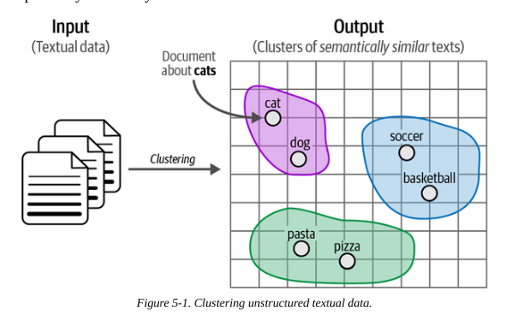
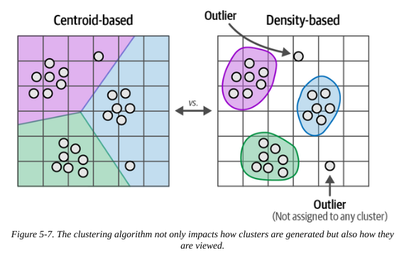
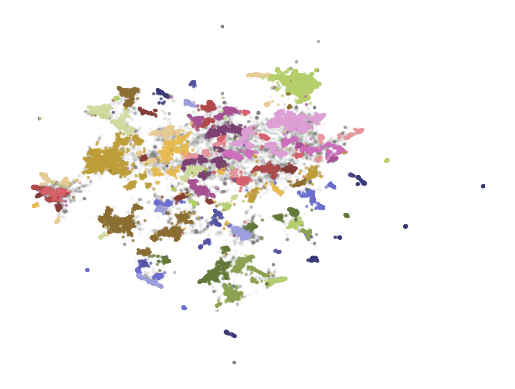
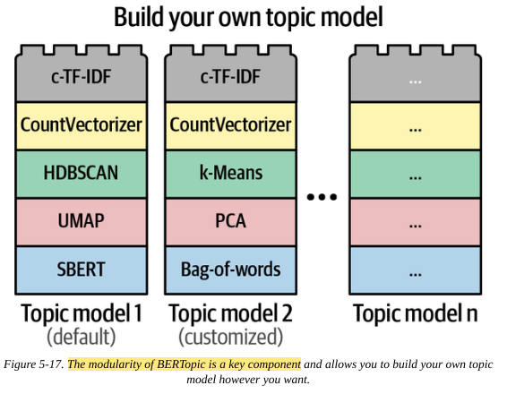
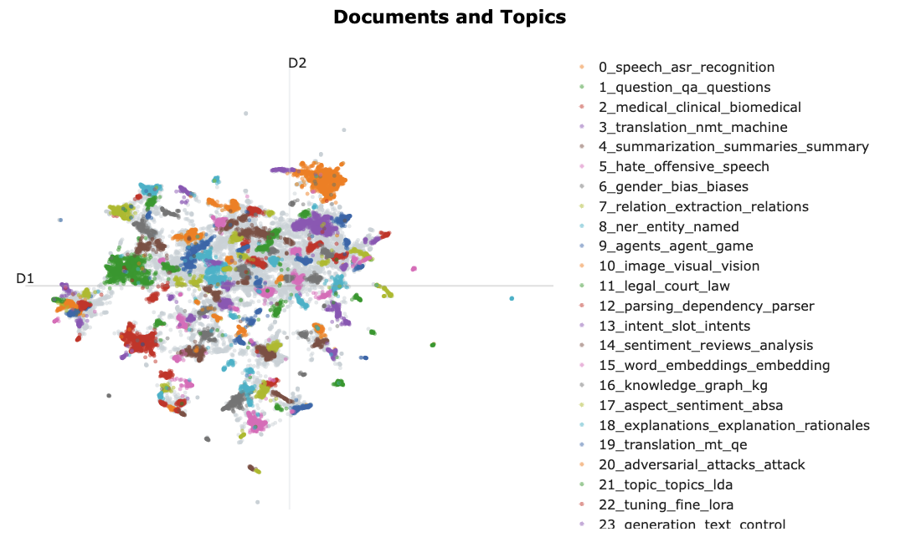
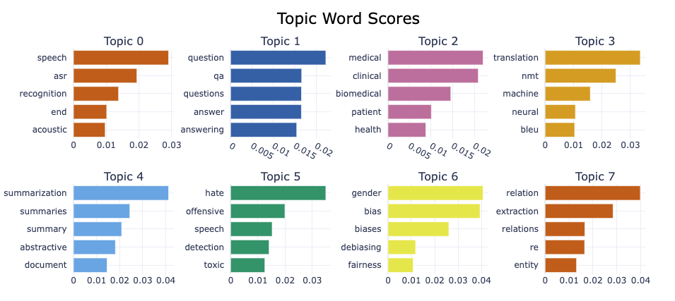
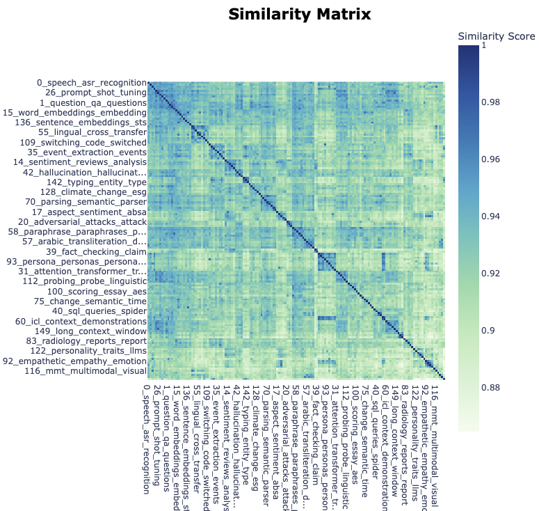
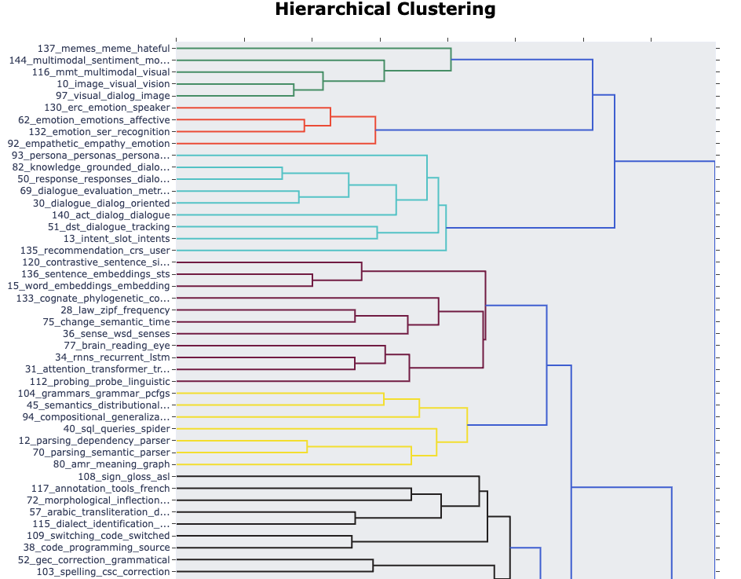
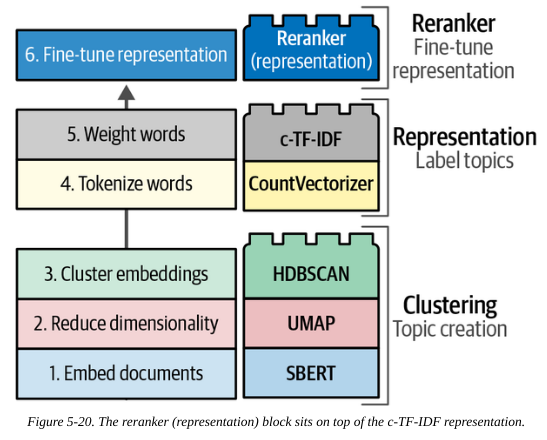
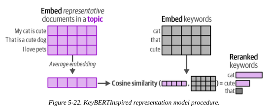

from datasets import load_dataset
dataset = load_dataset("maartengr/arxiv_nlp")["train"]
abstracts = dataset["Abstracts"]
titles = dataset["Titles"]Text Clustering and Topic Modeling
1. Text Clustering
1.1 The goal
Text clustering is an unsupervised technique that aims to group similar texts based on their content, meaning and relationships.

The clusters can the be used for applications such as outlier detection, speeding up labelling and finding mislabelled data.
It also has applications in topic modelling, where we assign a label or keywords to a cluster describing its constituents.
We apply this to an example data set of Arxiv articles. Let’s load the Arxiv data we’ll use for this:
1.2. Text clustering pipeline
There are many approaches to text clustering, including GNNs and centroid-based clustering. A common approach is:
- Convert input documents to embeddings, using an embedding model
- Reduce the dimensionality of those embeddings, using a dimensionality reduction model
- Group similar documents, using a cluster model
1.2.1. The embedding model
We convert our text to embedding vectors using an embedding model. We should choose one that was trained to optimise semantic similarity (which most are). We can use the MTEB leaderboard to help select a good model.
We can load a pre-trained model and create our embeddings.
from sentence_transformers import SentenceTransformer
embedding_model = SentenceTransformer("thenlper/gte-small")
embeddings = embedding_model.encode(abstracts, show_progress_bar=True)/Users/gurpreetjohl/miniconda3/envs/thellmbook/lib/python3.10/site-packages/huggingface_hub/file_download.py:797: FutureWarning: `resume_download` is deprecated and will be removed in version 1.0.0. Downloads always resume when possible. If you want to force a new download, use `force_download=True`.
warnings.warn(1.2.2. The dimensionality reduction model
High-dimensional data can suffer from the curse of dimensionality, making it difficult to find meaningful clusters.
We can use a dimensionality reduction model to compress (not remove) dimensions which makes the downstream clustering easier.
This is, by it’s nature, a lossy transformation. But we hope that enough of the information is retained to be useful.
Standard dimensionality reduction techniques include Principal Component Anaylsis (PCA) and Uniform Manifold Approximation (UMAP). We’ll use UMAP as it tends to handle nonlinear relationships better.
The following code reduces our embeddings from 384 -> 5 dimensions. We set min_dist=0 as this allows embedded points to be arbitrarily close together, which results in tighter clusters, and metric=‘cosine’ generally performs better than Euclidean methods for high-dimensional data.
from umap import UMAP
umap_model = UMAP(n_components=5, min_dist=0.0, metric='cosine', random_state=42)
reduced_embeddings = umap_model.fit_transform(embeddings)/Users/gurpreetjohl/miniconda3/envs/thellmbook/lib/python3.10/site-packages/umap/umap_.py:1952: UserWarning: n_jobs value 1 overridden to 1 by setting random_state. Use no seed for parallelism.
warn(
OMP: Info #276: omp_set_nested routine deprecated, please use omp_set_max_active_levels instead.1.2.3. The cluster model
Centroid-based algorithms like K-Nearest Neighbours (KNN) are popular in other settings but require us to specify the number of clusters ahead of time (which we don’t know) and forces all data points to be part of a cluster (there can’t be unassigned points). This makes them less useful for our use case.
Density-based algorithms calculate the number of clusters freely and do not force all points into a cluster. We’ll use HDBSCAN for our case.

We can cluster the data with the following code. We can vary min_cluster_size to change the number of clusters produced.
from hdbscan import HDBSCAN
hdbscan_model = HDBSCAN(min_cluster_size=50, metric="euclidean", cluster_selection_method="eom").fit(reduced_embeddings)
clusters = hdbscan_model.labels_huggingface/tokenizers: The current process just got forked, after parallelism has already been used. Disabling parallelism to avoid deadlocks...
To disable this warning, you can either:
- Avoid using `tokenizers` before the fork if possible
- Explicitly set the environment variable TOKENIZERS_PARALLELISM=(true | false)
huggingface/tokenizers: The current process just got forked, after parallelism has already been used. Disabling parallelism to avoid deadlocks...
To disable this warning, you can either:
- Avoid using `tokenizers` before the fork if possible
- Explicitly set the environment variable huggingface/tokenizers: The current process just got forked, after parallelism has already been used. Disabling parallelism to avoid deadlocks...
TOKENIZERS_PARALLELISM=(true | false)
huggingface/tokenizers: The current process just got forked, after parallelism has already been used. Disabling parallelism to avoid deadlocks...
To disable this warning, you can either:
To disable this warning, you can either:
- Avoid using `tokenizers` before the fork if possible
- Explicitly set the environment variable TOKENIZERS_PARALLELISM=(true | false)
- Avoid using `tokenizers` before the fork if possible
- Explicitly set the environment variable TOKENIZERS_PARALLELISM=(true | false)
huggingface/tokenizers: The current process just got forked, after parallelism has already been used. Disabling parallelism to avoid deadlocks...
To disable this warning, you can either:
- Avoid using `tokenizers` before the fork if possible
- Explicitly set the environment variable TOKENIZERS_PARALLELISM=(true | false)We can inspect the clusters and plot the data in the reduced dimension space. Although helpful, it’s worth remembering that this is just an approximation of the real embeddings, some information is lost.
First, let’s observe a selection of 3 documents from the first cluster to see if they seem similar:
import numpy as np
# Print first three documents in cluster 0
cluster = 0
for index in np.where(clusters==cluster)[0][:3]:
print(abstracts[index][:300] + "... \n") This works aims to design a statistical machine translation from English text
to American Sign Language (ASL). The system is based on Moses tool with some
modifications and the results are synthesized through a 3D avatar for
interpretation. First, we translate the input text to gloss, a written fo...
Researches on signed languages still strongly dissociate lin- guistic issues
related on phonological and phonetic aspects, and gesture studies for
recognition and synthesis purposes. This paper focuses on the imbrication of
motion and meaning for the analysis, synthesis and evaluation of sign lang...
Modern computational linguistic software cannot produce important aspects of
sign language translation. Using some researches we deduce that the majority of
automatic sign language translation systems ignore many aspects when they
generate animation; therefore the interpretation lost the truth inf...
Now we can plot the data in the reduced embedding space:
import pandas as pd
# Reduce 384-dimensional embeddings to two dimensions for easier visualization
reduced_embeddings = UMAP(n_components=2, min_dist=0.0, metric="cosine", random_state=42 ).fit_transform(embeddings)
df = pd.DataFrame(reduced_embeddings, columns=["x", "y"])
df["title"] = titles
df["cluster"] = [str(c) for c in clusters]
# Select outliers and non-outliers (clusters)
to_plot = df.loc[df.cluster != "-1", :]
outliers = df.loc[df.cluster == "-1", :]/Users/gurpreetjohl/miniconda3/envs/thellmbook/lib/python3.10/site-packages/umap/umap_.py:1952: UserWarning: n_jobs value 1 overridden to 1 by setting random_state. Use no seed for parallelism.
warn(import matplotlib.pyplot as plt
# Plot outliers and non-outliers separately
plt.scatter(outliers.x, outliers.y, alpha=0.05, s=2, c="grey")
plt.scatter(to_plot.x, to_plot.y, c=to_plot.cluster.astype(int), alpha=0.6, s=2, cmap="tab20b" )
plt.axis("off")(-7.562705826759339,
10.960084271430969,
-3.4470335602760316,
18.276195919513704)
2. Topic Modelling
This is where we find themes or latent topics in a cluster; we want to find keywords or phrases that best represent the topic.
Classical approaches to topic modelling include latent Dirichlet allocation (LDA), where it’s assumed that each topic is characterised by a probability distribution of words in a corpus. These are generally bag-of-words approaches that do not account for context or meaning.
An LLM-based approach is the modular BERTopic.
2.1. BERTopic
The first step is to perform text clustering using the same 3 steps outlined in the previous section.
We then use a bag-of-words approach per cluster (instead of per document as would usually be the case) to model a distribution over words per class. This is the CountVectorizer step.
We similarly use a class-specific variant of term-frequency inverse document-frequency called c-TF-IDF, which puts more weight on the meaningful words of that cluster.
We now have a generic text clustering pipeline:
flowchart LR A(Embeddings) --> B(Dimensionality Reduction) --> C(Clustering)
And a topic modeling pipeline:
flowchart LR D(Cluster Bag-of-Words) --> E(Keyword Selection)
Putting this all together with our choice of components:
flowchart LR A(SBERT) --> B(UMAP) --> C(HDBSCAN) --> D(CountVectorizer) --> E(c-TF-IDF)
The idea behind BERTopic is that these components are codular, so each can be swapped out like lego blocks. For example, if you prefer k-means clusters or PCA over UMAP, just swap it.

This modularity also means the same base model can be used and adapted for different tasks and use cases by adding/removing components downstream of the base model.
2.1.1. Create a BERTopic model
We can run this end-to-end pipeline using the previously defined models in BERTopic:
from bertopic import BERTopic
# Train our model with our previously defined models
topic_model = (BERTopic(embedding_model=embedding_model,
umap_model=umap_model,
hdbscan_model=hdbscan_model,
verbose=True)
.fit(abstracts, embeddings))huggingface/tokenizers: The current process just got forked, after parallelism has already been used. Disabling parallelism to avoid deadlocks...
To disable this warning, you can either:
- Avoid using `tokenizers` before the fork if possible
- Explicitly set the environment variable TOKENIZERS_PARALLELISM=(true | false)
huggingface/tokenizers: The current process just got forked, after parallelism has already been used. Disabling parallelism to avoid deadlocks...
To disable this warning, you can either:
- Avoid using `tokenizers` before the fork if possible
- Explicitly set the environment variable TOKENIZERS_PARALLELISM=(true | false)
2025-01-15 11:48:19,327 - BERTopic - Dimensionality - Fitting the dimensionality reduction algorithm
2025-01-15 11:48:47,848 - BERTopic - Dimensionality - Completed ✓
2025-01-15 11:48:47,851 - BERTopic - Cluster - Start clustering the reduced embeddings
huggingface/tokenizers: The current process just got forked, after parallelism has already been used. Disabling parallelism to avoid deadlocks...
To disable this warning, you can either:
- Avoid using `tokenizers` before the fork if possible
- Explicitly set the environment variable TOKENIZERS_PARALLELISM=(true | false)
huggingface/tokenizers: The current process just got forked, after parallelism has already been used. Disabling parallelism to avoid deadlocks...
To disable this warning, you can either:
- Avoid using `tokenizers` before the fork if possible
- Explicitly set the environment variable TOKENIZERS_PARALLELISM=(true | false)
huggingface/tokenizers: The current process just got forked, after parallelism has already been used. Disabling parallelism to avoid deadlocks...
To disable this warning, you can either:
- Avoid using `tokenizers` before the fork if possible
- Explicitly set the environment variable TOKENIZERS_PARALLELISM=(true | false)
huggingface/tokenizers: The current process just got forked, after parallelism has already been used. Disabling parallelism to avoid deadlocks...
To disable this warning, you can either:
- Avoid using `tokenizers` before the fork if possible
- Explicitly set the environment variable TOKENIZERS_PARALLELISM=(true | false)
2025-01-15 11:48:49,745 - BERTopic - Cluster - Completed ✓
2025-01-15 11:48:49,757 - BERTopic - Representation - Extracting topics from clusters using representation models.
2025-01-15 11:48:51,583 - BERTopic - Representation - Completed ✓2.1.2. Explore the topics
We can then explore the topics found by the model.
Note that the topic labelled -1 is a bucket for outliers that do not fit in any other cluster.
topic_model.get_topic_info()| Topic | Count | Name | Representation | Representative_Docs | |
|---|---|---|---|---|---|
| 0 | -1 | 13779 | -1_of_the_and_to | [of, the, and, to, in, we, language, that, for... | [ Language models have emerged as a central c... |
| 1 | 0 | 2224 | 0_speech_asr_recognition_end | [speech, asr, recognition, end, acoustic, spea... | [ The amount of labeled data to train models ... |
| 2 | 1 | 2104 | 1_question_qa_questions_answer | [question, qa, questions, answer, answering, a... | [ Multi-hop question answering (QA) requires ... |
| 3 | 2 | 1428 | 2_medical_clinical_biomedical_patient | [medical, clinical, biomedical, patient, healt... | [ Clinical texts, such as admission notes, di... |
| 4 | 3 | 986 | 3_translation_nmt_machine_neural | [translation, nmt, machine, neural, bleu, engl... | [ In this paper, we introduce a hybrid search... |
| ... | ... | ... | ... | ... | ... |
| 146 | 145 | 54 | 145_gans_gan_adversarial_generation | [gans, gan, adversarial, generation, generativ... | [ Text generation is of particular interest i... |
| 147 | 146 | 54 | 146_emoji_emojis_emoticons_sentiment | [emoji, emojis, emoticons, sentiment, twitter,... | [ The frequent use of Emojis on social media ... |
| 148 | 147 | 51 | 147_prompt_prompts_optimization_prompting | [prompt, prompts, optimization, prompting, llm... | [ Prompt optimization aims to find the best p... |
| 149 | 148 | 51 | 148_coherence_discourse_paragraph_text | [coherence, discourse, paragraph, text, cohesi... | [ While there has been significant progress t... |
| 150 | 149 | 51 | 149_long_context_window_length | [long, context, window, length, llms, memory, ... | [ We present a series of long-context LLMs th... |
151 rows × 5 columns
We can explore a particular topic by its topic number:
topic_model.get_topic(2)[('medical', 0.0220337946328463),
('clinical', 0.02092442350104087),
('biomedical', 0.014552038344966458),
('patient', 0.010048801098837407),
('health', 0.008769124731484461),
('notes', 0.008421182820081155),
('patients', 0.0067969193810322485),
('healthcare', 0.0067470745955792765),
('and', 0.006483211946307094),
('drug', 0.006111735386306484)]We can also search for clusters which match a given search term:
topic_model.find_topics("rocket science")([131, 46, 28, -1, 9], [0.8482957, 0.8474297, 0.8343923, 0.8332416, 0.8269581])Topic number 31 allegedly matches the term, so we can look closer at this topic:
topic_model.get_topic(131)[('materials', 0.050279482237225254),
('science', 0.02243336305054669),
('chemistry', 0.0215702079363354),
('chemical', 0.019510674137408444),
('scientific', 0.019096261213199146),
('material', 0.01734997997000861),
('synthesis', 0.013922383987668636),
('literature', 0.011377588070962407),
('reaction', 0.010392948527677913),
('extraction', 0.009880316014163601)]2.1.3. Visualise the topics
As we did in the “manual” example, we can visualise the text clusters. The library provides a handy convenience method for interactive plotting.
fig = topic_model.visualize_documents( titles, reduced_embeddings=reduced_embeddings, width=1200, hide_annotations=True )
fig.update_layout(font=dict(size=16))Unable to display output for mime type(s): application/vnd.plotly.v1+json
We can also plot keywords per topic:
topic_model.visualize_barchart()Unable to display output for mime type(s): application/vnd.plotly.v1+json
We can plot the similarity between topics as a heatmap:
topic_model.visualize_heatmap(n_clusters=30)Unable to display output for mime type(s): application/vnd.plotly.v1+json
We can also see the hierarchies within topics
topic_model.visualize_hierarchy()Unable to display output for mime type(s): application/vnd.plotly.v1+json
2.2. Re-ranking
The pipeline so far relied on the bag-of-words (BoW) approach to identify key words. This is fast, but does not take the semantic structure of a sentence into account.
We could swap the bag-of-words “lego block” for something more sophisticated. Another approach is to instead keep it as is but add an extra “re-ranker” block at the end to fine-tune the ordering of the keywords. This can be a slower algorithm, but it only processes the list of words identified by BoW for each topic (tens or hundreds), not the entire dcoument corpus (millions or more).
These re-rankers are referred to as representation models.

2.2.1. KeyBERTInspired
The idea behind this apporach is to use the similarity between embedding and words vectors to give a score, then order key words by their match score.
- Average document embedding: Calculate embeddings for each document, then average
- Calculate embeddings for each keyword
- Calculate cosine similarity between each keyword and the average document embedding
- Order by the most similar

We will save the representations from the previousl model so we can compare them to the re-ranked versions
# Save original representations
from copy import deepcopy
original_topics = deepcopy(topic_model.topic_representations_)The following convenience function helps to compare topics between the original and reranked versions.
def topic_differences(model, original_topics, num_topics=5):
"""Show the differences in topic representations between two models"""
topic_words = []
for topic in range(num_topics):
# Extract top 4 words per topic per model
og_words = " | ".join(list(zip(*original_topics[topic])) [0][:4])
reranked_words = " | ".join(list(zip(*model.get_topic(topic))) [0][:4])
topic_words.append((topic, og_words, reranked_words,))
return pd.DataFrame(columns=["Topic", "Original", "Reranked"], data=topic_words)from bertopic.representation import KeyBERTInspired
# Update our topic representations using KeyBERTInspired
representation_model = KeyBERTInspired()
topic_model.update_topics(abstracts, representation_model=representation_model)# Show topic differences
topic_differences(topic_model, original_topics, num_topics=10)| Topic | Original | Reranked | |
|---|---|---|---|
| 0 | 0 | speech | asr | recognition | end | transcription | phonetic | speech | language |
| 1 | 1 | question | qa | questions | answer | answering | comprehension | retrieval | questions |
| 2 | 2 | medical | clinical | biomedical | patient | nlp | clinical | text | language |
| 3 | 3 | translation | nmt | machine | neural | translation | translate | translations | multi... |
| 4 | 4 | summarization | summaries | summary | abstractive | summarization | summarizers | summaries | abst... |
| 5 | 5 | hate | offensive | speech | detection | hate | hateful | language | cyberbullying |
| 6 | 6 | gender | bias | biases | debiasing | gendered | gender | bias | biases |
| 7 | 7 | relation | extraction | relations | re | relation | relations | relational | extracting |
| 8 | 8 | ner | entity | named | recognition | entity | entities | labeled | name |
| 9 | 9 | agents | agent | game | games | reasoning | ai | game | agents |
2.2.2. Maximal Marginal Relevance
2.3. Text Generation
References
- Chapter 5 of Hands On LLMs
- MTEB leaderboard
- BERT best practices